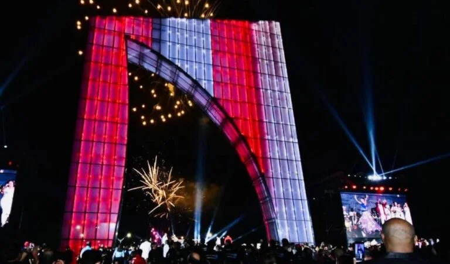
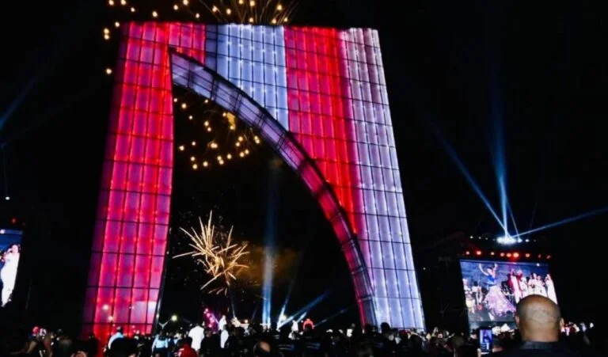

.png)

 

Tomarse fotos en el monumento
Montar en bicicleta
Patinar
Hcaer ejercicio
La estructura, recubierta de vidrio elaborado por Tecnoglass (empresa pionera en la ciudad), forma en su centro una aleta y lleva como nombre La Ventana de Campeones o La Aleta del Tiburón, relacionado con el apodo más famoso del equipo rojiblanco.
El monumento de 30 metros de altura que tiene Barranquilla y que fue levantado en homenaje al club de fútbol representativo de la región Caribe, el Junior.
El monumento está ubicado en la prolongación del Gran Malecón del río Magdalena y está junto al recién instalado puente levadizo, el primero de este tipo en el país.
Es un sitio ideal para ir con niños
Cuenta con entrada y zonas accesible para personas en sillas de ruedas
La Aleta del Tiburon esta abierto las 24 horas del dia, los 7 dias de la semana. Sin embargo, en horas de al medio de dia, por el intenso sol y calor que hace en la ciudad en tiempo de verano, es recomendable llevar bloqueador solar.
Hidratarse bien
Contar con disponibilidad de tiempo para recorrer este maravilloso monumento.